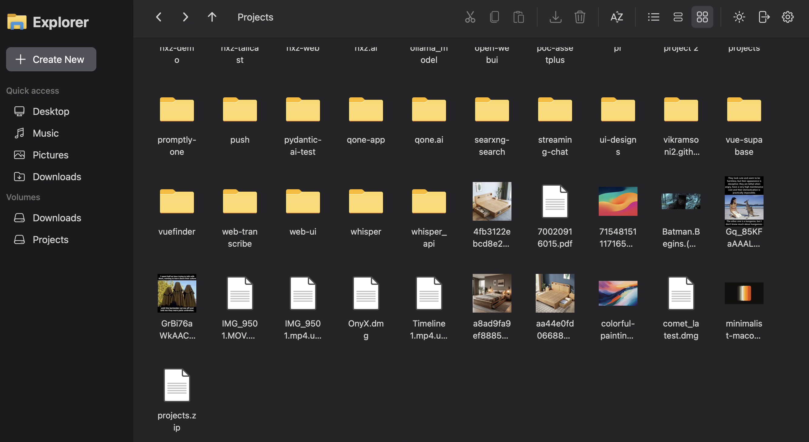
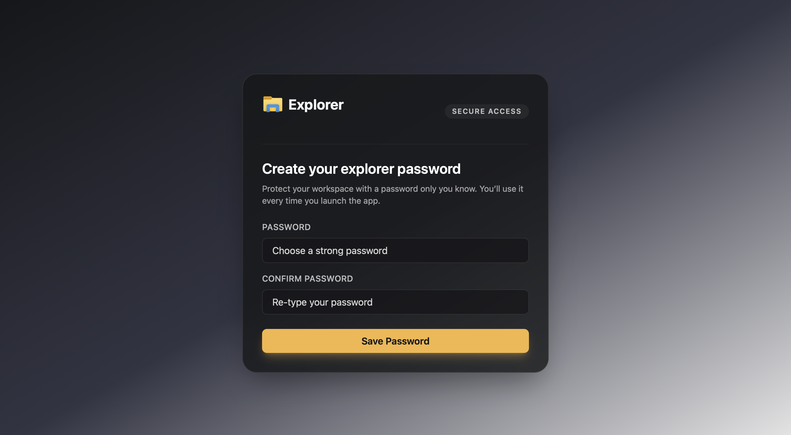

Features
File Management
- Browse and Preview: Navigate your files and folders with ease. Preview images, videos, and text files directly in the browser.
- File Operations: Upload, download, move, and delete files and folders.
- Multiple Views: Switch between a grid view for a visual overview and a detail view for more information.
- Light and Dark Modes: Choose between light and dark themes to suit your preference.
- Thumbnail Generation: Thumbnails for images and videos are automatically generated for faster navigation.
- Code Editor: Edit text-based files with syntax highlighting.
- Search: Search for files and folders in the current directory, and search for content inside files.
- Context Menu: A right-click context menu provides quick access to file operations like creating new files and folders.
- Resizable Sidebar: The sidebar can be resized to your liking.
- Responsive UI: The user interface is responsive and works well on different screen sizes.
|  |  |
|---|---|
| Grid view keeps media heavy folders easy to scan. | Light theme works well for bright shared spaces. |
 |
 |
|---|---|
| Detail view surfaces metadata like file size and timestamps. | Track multi-file uploads with per-item progress feedback. |
User and Access Management
- Local Users: Create and manage local users with password authentication.
- OIDC Integration: Authenticate users against an external OpenID Connect provider like Keycloak, Authelia, or Google.
- Admin Settings: Manage users, including setting permissions and promoting users to administrators.
- Access Control Rules: Per‑folder rules to enforce read‑only or hidden paths.
- Favorites: Pin frequently used folders with custom icons for quick access.
- Password Protection: Protect your entire workspace with a master password.
- Password Changes: Local users can change their own passwords.
- Secure Access: Control who has access to your files and folders.
- User Menu: A user menu in the sidebar provides access to user-specific settings and actions.
|  |  |
|---|---|
| Lock the workspace with a master password before anyone can browse. | Re-enter the password to unlock trusted sessions. |